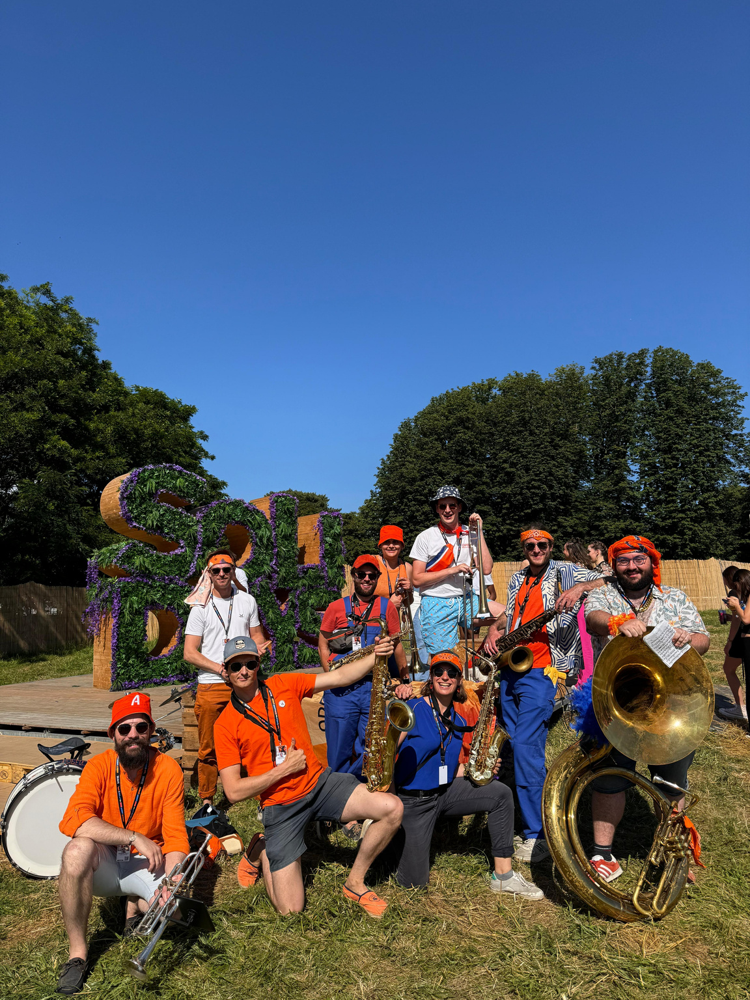

Rosa BonheurParis
Rosa BonheurParisPrésentation de l’OBB · 2025
OpenBrassBand
La fanfare la plus ouverte de Paris.
Pop
Rock
Funk
New Orleans
Électro
Rock
Funk
New Orleans
Électro
Musique
Énergie
Solaire
Collectif
Énergie
Solaire
Collectif
@ openbrassband
Hello!
I'm
OBB
theL’Open Brass Band, c’est l’énergie d’une fanfare qui fait vibrer les murs et sourire les cœurs ! Une déferlante de cuivres et de percussions qui secoue, électrise et réchauffe l’ambiance en un instant.
Impossible de rester insensible : nos notes vous feront danser, chanter et vibrer jusqu’au bout de la nuit. Et bonne nouvelle, ce cocktail explosif est à consommer sans modération !
@ openbrassband
Nos concerts
the best en 2024Rosa BonheurParis Festival SolidaysFestival
Festival SolidaysFestival Gallia PantinConcert
Gallia PantinConcert
Mariage du copainLa famille OBBNotre histoire
Notre
histoire
belleTout a commencé dans une fanfare étudiante, et pour certains d’entre nous, ça fait plus de 10 ans que ça dure !
En 2018, l’envie de prolonger l’aventure nous a poussés à créer l’Open Brass Band. Depuis, on joue, on vibre et on partage notre passion, avec de nouveaux copains qui nous ont rejoints en route !

Notre musique
Pouêt
Notre musique
Notre univers musical mêle l’énergie de la pop et la puissance des brass bands, avec des influences allant de Daft Punk à Lucky Chops, en passant par Beyoncé, Meute ou France Gall.

Nous jouons en totale liberté
À notre sauce.
Nos morceaux sont réarrangés à notre sauce, l’improvisation est au cœur de notre jeu, et les solos enflammés fusent à tout moment.
Et pour pimenter le tout, nos musiciens n’hésitent pas à changer d’instruments en plein set !
Notre premier album
Premier
Brassin
Notre 1er albumEn 2024, ce fut le tournant de notre musique avec l’enregistrement de notre EP « Premier Brassin ». Le mélange de toutes nos influences nous a poussés à aller en studio pour donner vie à nos morceaux, avec clips et vinyles à la clé !
Un concentré musical à savourer en soirée, au coin du feu ou sur la route, les fenêtres grandes ouvertes.

À écouter
et regarder
whaooo !Pour les yeux, retrouvez-nous sur Instagram et sur YouTube avec un magnifique clip de « Club Mix ».
Et pour les oreilles, rendez-vous sur toutes les plateformes de streaming !
Click or scan
On parle ensemble de musique ?